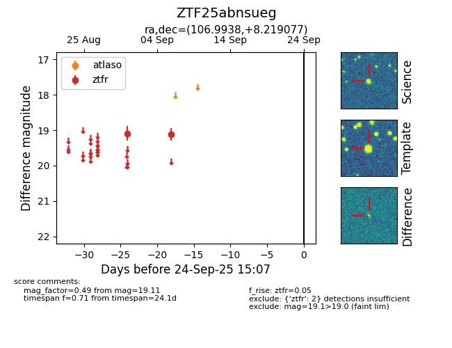

FINK: ZTF25abnsueg
Lasair: ZTF25abnsueg
ALeRCE: ZTF25abnsueg
ZTF25abnsueg (ztf,fink)
equatorial (ra, dec) = (106.9938,+8.21908)
galactic (l, b) = (207.4524,+7.39394)

last ztfr=19.11
2 ztfr detections